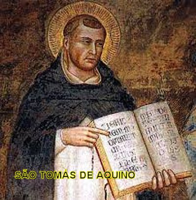

APRESENTAÇÃO
A ORAÇÃO DO PAI
NOSSO FOI ENSINADA POR JESUS AOS SEUS DISCÍPULOS, COM O OBJETIVO DE INSTRUÍ-LOS,
COMO DEVIAM REZAR. È UMA ORAÇÃO TÃO BONITA E EFICAZ QUE SE TORNOU UNIVERSAL,
SENDO REZADA PELOS FIÉIS EM TODO MUNDO. 
AQUI APRESENTAMOS UM RESUMO DO COMENTÁRIO FEITO PELO TEÓLOGO E ADMIRÁVEL DOUTOR DA IGREJA SÃO TOMÁS DE AQUINO, QUE NOS OFERECE O MELHOR CAMINHO PARA REZARMOS A PRECE DO SENHOR E ALCANÇARMOS OS BENEFÍCIOS QUE A ORAÇÃO PODE NOS PROPORCIONAR.
O APOSTOLADO DOS SAGRADOS CORAÇÕES PARA FACILITAR O MELHOR ENTENDIMENTO E UMA PROFUNDA OBSERVAÇÃO DOS ENSINAMENTOS AQUI CONTIDOS, DIVIDIU A TRADUÇÃO ESPANHOLA EM PEQUENOS CAPÍTULOS.
ESTE SITE TEM A INTENÇÃO DE AJUDAR, E ASSIM, FORMULAMOS OS NOSSOS MAIS SINCEROS E FERVOROSOS VOTOS, PARA QUE ESTA PRECIOSA E MAGNÍFICA ORAÇÃO, POSSA PRODUZIR OS MELHORES FRUTOS NO CORAÇÃO E NA VIDA DE TODOS OS LEITORES.
APOSTOLADO DOS SAGRADOS CORAÇÕES
http://www.apostoladosagradoscoracoes.com/